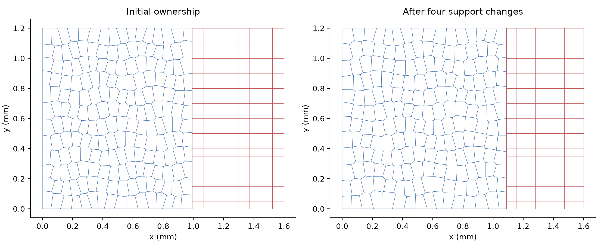
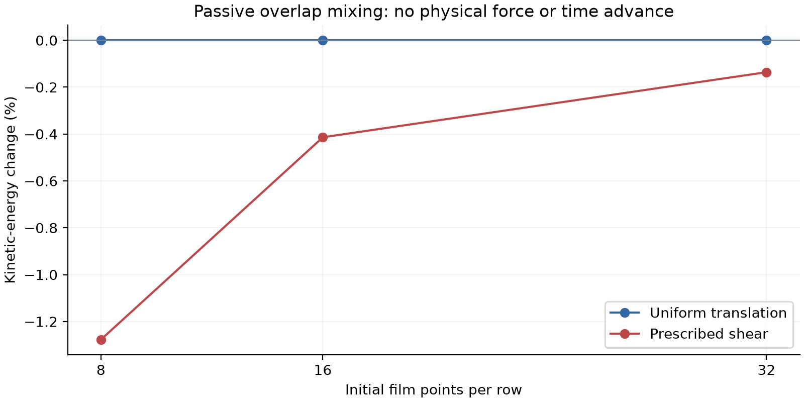
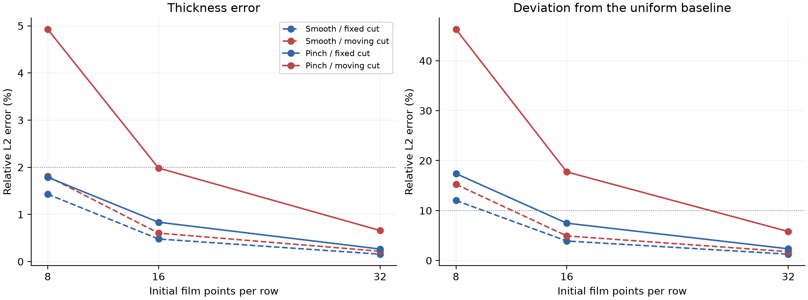
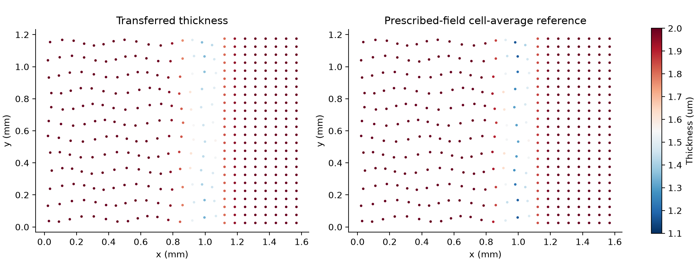

C1 EXPLORATION / 2026-11-11 / NECESSARY TRANSFER FOUNDATION
让同一份液体，
携带它的动量跨越接口。
从上一轮常速度失真反例推进：使用新旧控制区域的真实几何重叠，同时传递液量、表面/体相表活和动量，并单独记录交界移动造成的所有权改变。
这是共同传递算子的必要检查，尚未实现真实局部弯月面耦合。没有推进力学、排液或物理时间。控制区域面积与旧核面积不一致，因此没有直接接入现有运动膜求解器；默认路径不变。这是已有ALE几何重映射思想的具体实现，不是通用重映射首创。
这里实际计算了什么
左侧粒子位置在两个方向变化，以截断Voronoi区域表示其几何支撑；右侧为局部加密矩形区域。接口可固定或移动。每个供体的重叠面积比例，同时用于V、单面S、B与物理动量P；总表活为2S+B。两侧覆盖同一物理区域，有空洞或重叠会拒绝计算，绝不以场归一化掩盖几何缺口。

守恒、常速度与速度平移一致性
全局液量/动量归一化残差最大6.00e-14 / 4.53e-14，移动交界液量账本最大残差7.30e-15。常速度误差≤2.32e-16，任意均匀速度叠加的交换一致性误差≤6.36e-16。移动区域的账本是几何/ALE所有权项，不能当成物理膜—弯月面交换通量；材料对流与相对排液尚未加入。

纯传递的动能不能凭空增加
质量与动量共享非负权重时，目标速度是供体速度的质量加权平均；凸性给出被动混合动能不增。均匀速度动能变化只有舍入量级；剪切场的动能减少是低阶数值混合，不能称作真实黏性耗散，也没有把损失转换为内能来声称总能量守恒。

场误差仍需独立加密
移动交界局部夹缩、四次传递时，最细档厚度L2误差0.658%，变薄量误差5.796%；最细档24组均达到预设场目标。粗档移动接口的误差仍超标，不能只凭库存和动量通过就接受。这里改变的是空间几何和传递次数，没有物理时间步，因此不构成时间收敛证据。光滑目标场采用独立的二次三角形求积计算单元平均；尚未得到任意场的严格误差界。


展开全部72组结果（粗档失败也保留）
| Case | 厚度L2 | 变薄量L2 | 动能变化 | 必要门槛 | 2% / 10%场目标 |
|---|---|---|---|---|---|
| n8_p0_s0_m0_c1 | 0.000% | 0.000% | 0% | PASS | PASS |
| n8_p0_s0_m0_c4 | 0.000% | 0.000% | -1.11e-14% | PASS | PASS |
| n8_p0_s1_m0_c1 | 0.000% | 0.000% | -0.191% | PASS | PASS |
| n8_p0_s1_m0_c4 | 0.000% | 0.000% | -0.701% | PASS | PASS |
| n8_p1_s0_m0_c1 | 0.455% | 3.821% | 2.22e-14% | PASS | PASS |
| n8_p1_s0_m0_c4 | 1.429% | 12.003% | -1.11e-14% | PASS | FAIL |
| n8_p1_s1_m0_c1 | 0.455% | 3.821% | -0.184% | PASS | PASS |
| n8_p1_s1_m0_c4 | 1.429% | 12.003% | -0.679% | PASS | FAIL |
| n8_p2_s0_m0_c1 | 0.646% | 6.321% | -2.22e-14% | PASS | PASS |
| n8_p2_s0_m0_c4 | 1.788% | 17.389% | 0% | PASS | FAIL |
| n8_p2_s1_m0_c1 | 0.646% | 6.321% | -0.193% | PASS | PASS |
| n8_p2_s1_m0_c4 | 1.788% | 17.389% | -0.713% | PASS | FAIL |
| n8_p0_s0_m1_c1 | 0.000% | 0.000% | 4.44e-14% | PASS | PASS |
| n8_p0_s0_m1_c4 | 0.000% | 0.000% | -5.55e-14% | PASS | PASS |
| n8_p0_s1_m1_c1 | 0.000% | 0.000% | -0.464% | PASS | PASS |
| n8_p0_s1_m1_c4 | 0.000% | 0.000% | -1.29% | PASS | PASS |
| n8_p1_s0_m1_c1 | 0.789% | 6.621% | 4.44e-14% | PASS | PASS |
| n8_p1_s0_m1_c4 | 1.809% | 15.246% | -2.22e-14% | PASS | FAIL |
| n8_p1_s1_m1_c1 | 0.789% | 6.621% | -0.456% | PASS | PASS |
| n8_p1_s1_m1_c4 | 1.809% | 15.246% | -1.27% | PASS | FAIL |
| n8_p2_s0_m1_c1 | 3.178% | 29.728% | 4.44e-14% | PASS | FAIL |
| n8_p2_s0_m1_c4 | 4.926% | 46.295% | 2.22e-14% | PASS | FAIL |
| n8_p2_s1_m1_c1 | 3.178% | 29.728% | -0.457% | PASS | FAIL |
| n8_p2_s1_m1_c4 | 4.926% | 46.295% | -1.28% | PASS | FAIL |
| n16_p0_s0_m0_c1 | 0.000% | 0.000% | -1.11e-13% | PASS | PASS |
| n16_p0_s0_m0_c4 | 0.000% | 0.000% | 0% | PASS | PASS |
| n16_p0_s1_m0_c1 | 0.000% | 0.000% | -0.0651% | PASS | PASS |
| n16_p0_s1_m0_c4 | 0.000% | 0.000% | -0.248% | PASS | PASS |
| n16_p1_s0_m0_c1 | 0.167% | 1.360% | -3.33e-14% | PASS | PASS |
| n16_p1_s0_m0_c4 | 0.479% | 3.899% | -2.22e-14% | PASS | PASS |
| n16_p1_s1_m0_c1 | 0.167% | 1.360% | -0.064% | PASS | PASS |
| n16_p1_s1_m0_c4 | 0.479% | 3.899% | -0.244% | PASS | PASS |
| n16_p2_s0_m0_c1 | 0.272% | 2.432% | 0% | PASS | PASS |
| n16_p2_s0_m0_c4 | 0.834% | 7.467% | 4.44e-14% | PASS | PASS |
| n16_p2_s1_m0_c1 | 0.272% | 2.432% | -0.0662% | PASS | PASS |
| n16_p2_s1_m0_c4 | 0.834% | 7.467% | -0.252% | PASS | PASS |
| n16_p0_s0_m1_c1 | 0.000% | 0.000% | -5.11e-13% | PASS | PASS |
| n16_p0_s0_m1_c4 | 0.000% | 0.000% | 4.88e-13% | PASS | PASS |
| n16_p0_s1_m1_c1 | 0.000% | 0.000% | -0.155% | PASS | PASS |
| n16_p0_s1_m1_c4 | 0.000% | 0.000% | -0.413% | PASS | PASS |
| n16_p1_s0_m1_c1 | 0.364% | 2.964% | -2.22e-14% | PASS | PASS |
| n16_p1_s0_m1_c4 | 0.603% | 4.914% | -7.77e-14% | PASS | PASS |
| n16_p1_s1_m1_c1 | 0.364% | 2.964% | -0.153% | PASS | PASS |
| n16_p1_s1_m1_c4 | 0.603% | 4.914% | -0.408% | PASS | PASS |
| n16_p2_s0_m1_c1 | 0.585% | 5.286% | 2.22e-13% | PASS | PASS |
| n16_p2_s0_m1_c4 | 1.984% | 17.735% | 1.78e-13% | PASS | FAIL |
| n16_p2_s1_m1_c1 | 0.585% | 5.286% | -0.158% | PASS | PASS |
| n16_p2_s1_m1_c4 | 1.984% | 17.735% | -0.414% | PASS | FAIL |
| n32_p0_s0_m0_c1 | 0.000% | 0.000% | 0% | PASS | PASS |
| n32_p0_s0_m0_c4 | 0.000% | 0.000% | -6.66e-14% | PASS | PASS |
| n32_p0_s1_m0_c1 | 0.000% | 0.000% | -0.0181% | PASS | PASS |
| n32_p0_s1_m0_c4 | 0.000% | 0.000% | -0.0714% | PASS | PASS |
| n32_p1_s0_m0_c1 | 0.068% | 0.548% | -3.33e-14% | PASS | PASS |
| n32_p1_s0_m0_c4 | 0.156% | 1.264% | -6.66e-14% | PASS | PASS |
| n32_p1_s1_m0_c1 | 0.068% | 0.548% | -0.018% | PASS | PASS |
| n32_p1_s1_m0_c4 | 0.156% | 1.264% | -0.0708% | PASS | PASS |
| n32_p2_s0_m0_c1 | 0.094% | 0.828% | 6.66e-14% | PASS | PASS |
| n32_p2_s0_m0_c4 | 0.265% | 2.334% | -8.88e-14% | PASS | PASS |
| n32_p2_s1_m0_c1 | 0.094% | 0.828% | -0.0183% | PASS | PASS |
| n32_p2_s1_m0_c4 | 0.265% | 2.334% | -0.0724% | PASS | PASS |
| n32_p0_s0_m1_c1 | 0.000% | 0.000% | -5.35e-12% | PASS | PASS |
| n32_p0_s0_m1_c4 | 0.000% | 0.000% | -4.25e-12% | PASS | PASS |
| n32_p0_s1_m1_c1 | 0.000% | 0.000% | -0.0463% | PASS | PASS |
| n32_p0_s1_m1_c4 | 0.000% | 0.000% | -0.136% | PASS | PASS |
| n32_p1_s0_m1_c1 | 0.169% | 1.365% | -3.44e-13% | PASS | PASS |
| n32_p1_s0_m1_c4 | 0.218% | 1.766% | -2.44e-13% | PASS | PASS |
| n32_p1_s1_m1_c1 | 0.169% | 1.365% | -0.046% | PASS | PASS |
| n32_p1_s1_m1_c4 | 0.218% | 1.766% | -0.135% | PASS | PASS |
| n32_p2_s0_m1_c1 | 0.226% | 1.998% | -5.77e-13% | PASS | PASS |
| n32_p2_s0_m1_c4 | 0.658% | 5.796% | -5.88e-13% | PASS | PASS |
| n32_p2_s1_m1_c1 | 0.226% | 1.998% | -0.047% | PASS | PASS |
| n32_p2_s1_m1_c4 | 0.658% | 5.796% | -0.136% | PASS | PASS |
下一关：同一几何上的能量和真实通量
- 使局部排液能量、化学势、几何面积与共享接口通量使用同一控制区域；不能只替换旧求解器的面积数组而保留旧几何力导数。
- 加入真正的材料运动与相对排液项，分别核对所有权改变、物质跨界、表活和边界功；测试双向交换和局部支撑变化。
- 推进同方程均匀细参照、空间/物理时间收敛及局部域尺寸敏感性，之后才检验实验与独立预测交换系数。完整C1仍未完成。